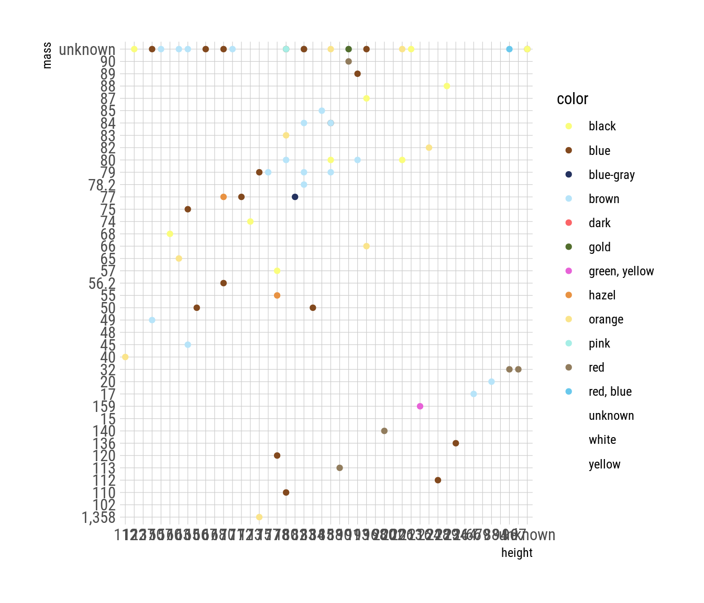
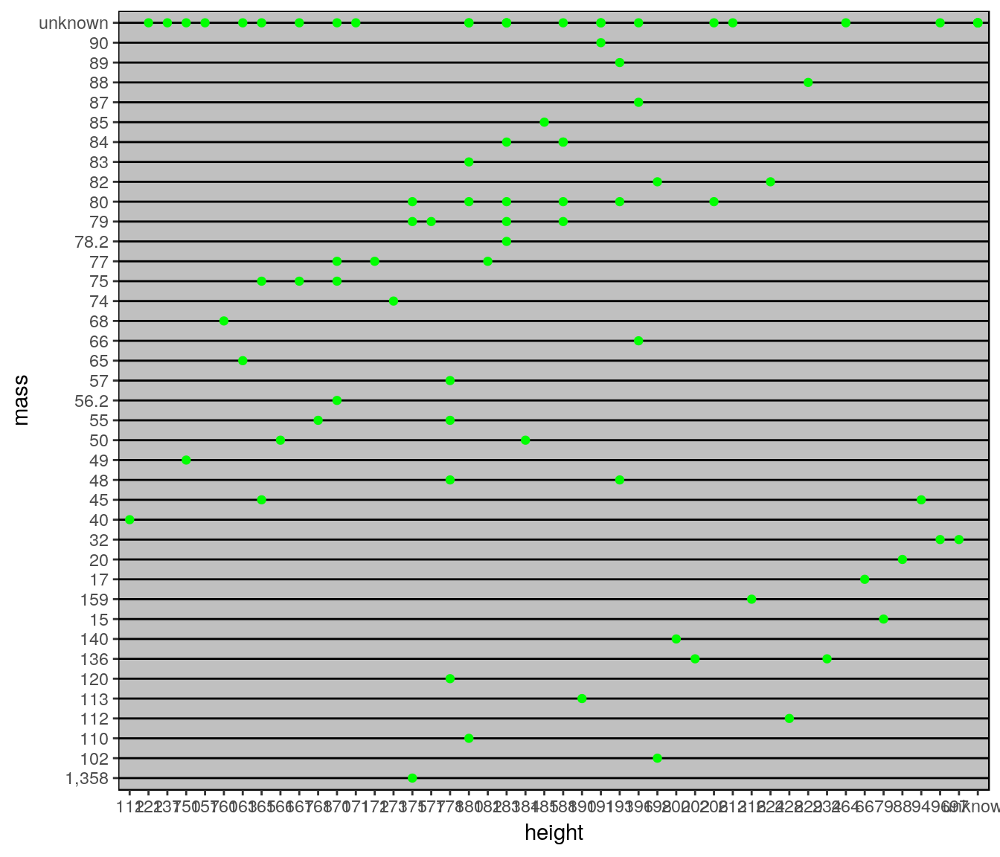
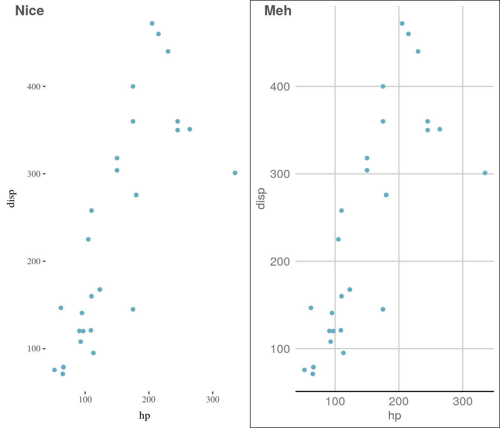
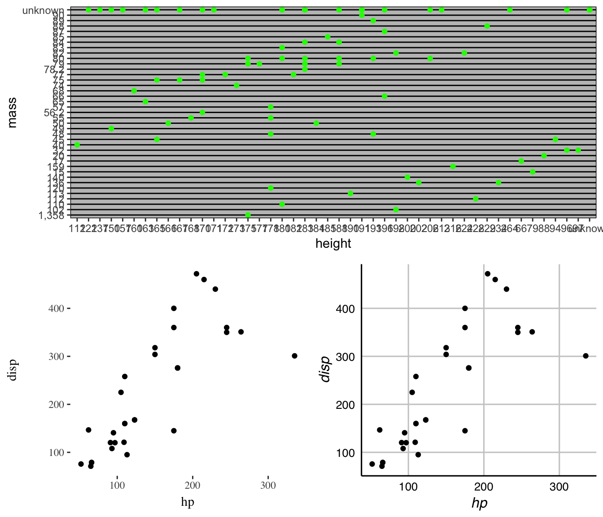
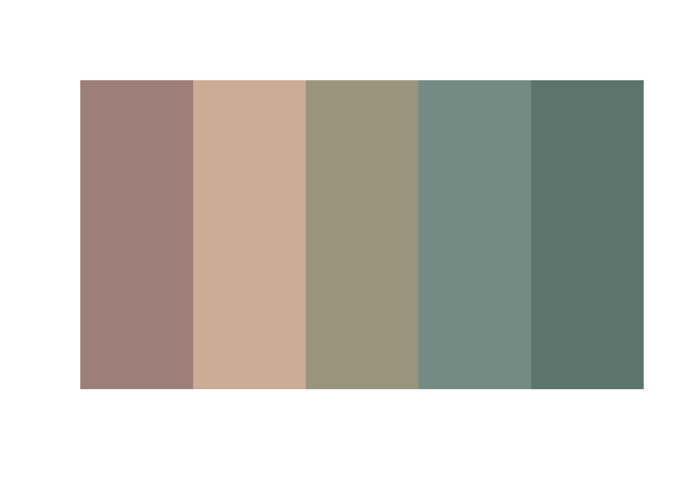
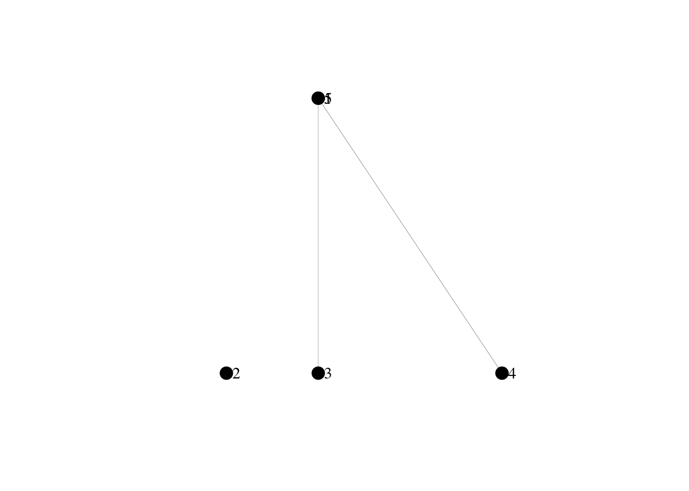

7 Plotting, reporting and visualizing
One of the most significant reasons to use R is probably its plotting capabilities, people contributing to ggplot2 and the community’s effort of adding package that integrate with it. Below you’ll find some packages for plotting.
7.1 Layout
Use hrbrthemes for a nicer layout:
library(hrbrthemes)
library(ggsci)
import_roboto_condensed()
g <- ggplot(df) + geom_point(aes(x = height, y = mass, color = color)) + hrbrthemes::theme_ipsum_rc() +
ggsci::scale_color_rickandmorty()
print(g)
Recently I started changing to simpler layouts and themes, for instance as described on Tufte in R. ggthemes offers some nice options to do so. For instance, if you are feeling jealous that you cannot draft some Excel plots, cause you are working with R:
library(ggthemes)
g <- ggplot(df) + geom_point(aes(x = height, y = mass), color = "green") + ggthemes::theme_excel()
print(g)
7.2 Publication ready plots
cowplot and ggpubr are great for greating publication ready plots:
p1 <- ggplot(mtcars, aes(hp, disp)) + geom_point() + ggthemes::theme_tufte()
p2 <- ggplot(mtcars, aes(hp, disp)) + geom_point() + ggthemes::theme_gdocs()
cowplot::plot_grid(p1, p2, ncol = 2, align = "vh", labels = c("Nice", "Meh"))
If these two are still not enough, I usually go with patchwork:
library(patchwork)
g + (p1 + p2) + plot_layout(ncol = 1)
7.3 Colors
I use colorspace and colorblindr in order to remove some hue and chroma. viridis is a wonderful set of colors for continuous, sequential data. For discrete, qualitative data I mainly use ggthemr and the fresh colors. ggsci also has some wonderful color palettes. scales lets you have a look at a color palette easily.
library(colorspace)
library(colorblindr)
library(viridis)
library(ggthemr)
library(scales)
library(cowplot)
ggthemr::ggthemr("fresh", "scientific", spacing = 2, type = "inner")
p1 <- colorblindr::gg_color_gradient() + colorspace::scale_fill_continuous_sequential("viridis",
c1 = 20, c2 = 70, l1 = 25, l2 = 100)
p2 <- colorblindr::gg_color_gradient() + colorspace::scale_fill_continuous_sequential("Blues",
c1 = 20, c2 = 70, l1 = 25, l2 = 100)
p3 <- colorblindr::gg_color_gradient() + colorspace::scale_fill_continuous_diverging(c1 = 40)
df <- data.frame(Col = ggthemr::swatch()[1:10], X = 1, Y = seq(10))
p4 <- ggplot(df) + geom_tile(aes(x = Y, y = X), fill = df$Col) + theme_void()
cowplot::plot_grid(p1, p2, p3, p4, ncol = 2, align = "vh")
Another great tool is swatches:
library(swatches)
omega_nebula <- read_ase(system.file("palettes", "omega_nebula.ase", package = "swatches"))
show_palette(omega_nebula)
7.4 Interactive and animated plots
Often you want to create an interactive plot, for instance when serving on a shiny instance. One way to do that is using plotly:
library(plotly)
q <- qplot(data = iris, x = Sepal.Length, y = Sepal.Width, color = Species) +
ggthemes::theme_tufte()
plotly::ggplotly(q)Recently I also stumbled upon highcharter and ggvis:
library(highcharter)
hchart(iris, "scatter", hcaes(x = Sepal.Length, y = Sepal.Width, group = Species)) %>%
hc_add_theme(hc_theme_tufte())library(ggvis)
data("mtcars")
mtcars %>% ggvis(~wt, ~mpg, `:=`(size, input_slider(10, 100)), `:=`(opacity,
input_slider(0, 1))) %>% layer_points()With gganimate you can directly create GIFs from you plots:
library(gganimate)
library(gapminder)
g <- ggplot(gapminder, aes(gdpPercap, lifeExp, size = pop, frame = year)) +
geom_point() + geom_smooth(aes(group = year), method = "lm", show.legend = FALSE) +
facet_wrap(~continent, scales = "free") + ggthemes::theme_tufte()
gganimate(g)
7.5 Graphs
There are many wonderful graph and network libraries around for plotting. For HTML DiagrammeR produces beautiful graphs:
library(DiagrammeR)
create_graph() %>% add_node(label = expression(Z), node_aes = node_aes(penwidth = 2,
fontname = "Arial Narrow", fontcolor = "black", fillcolor = "white", color = "black")) %>%
add_node(label = "X", node_aes = node_aes(penwidth = 2, fontname = "Arial Narrow",
fontcolor = "black", fillcolor = "grey", color = "black")) %>% add_edge(from = 1,
to = 2, edge_aes = edge_aes(color = "black")) %>% render_graph(layout = "tree")For PDFs I primarily use igraph (which you can also use for graph algorithms).
library(igraph)
set.seed(1)
g <- igraph::random.graph.game(5, p.or.m = 0.4)
l <- igraph::layout.reingold.tilford(g)
l[1, 1:2] <- c(1, 1)
l[2, 1:2] <- c(0, 0)
l[3, 1:2] <- c(1, 0)
l[4, 1:2] <- c(3, 0)
# l[5, 1:2] <- c(2, 2)
plot(g, vertex.size = 9, vertex.color = "black", vertex.label.degree = 0, vertex.label.cex = 1,
vertex.label.dist = 1, vertex.label.color = "black", edge.color = "darkgrey",
edge.width = 0.5, edge.arrow.size = 0.65, layout = l)
Other packages for graphi visualisations include ggnetwork/ggnet, tidygraph, or ggraph.
7.6 RMarkdown
Rmarkdown is a great way for documentation, reporting and working reproducibly. Rstudio provides tons of different output formats like web sites (like this one), Tufte style documents, blogs and others. For presentations that use R code I use either xaringan, Slidify or reveal.js. Find all the output formats by Rstudio here.
7.7 Shiny
If you want to present your work interactively you can do so by building a web page using shiny. Setting up a Shiny instance for reporting is a great way to present data using interactive plots. Setting up shiny is fairly easy. You need to create a server.R file and ui.R file, e.g. like this:
cat R/ui.Rlibrary(shiny)
library(shinyjs)
library(plotly)
shinyUI(
fluidPage(
useShinyjs(),
fluidRow(
column(
width = 6,offset=2,
h3("Scatterplot"),
HTML("<h5><i>Created using ggplot2, hrbrthemes and ggsci on the iris data.</i></h5>"),
plotOutput("scatterplot", width=800)
)
)
)
)cat R/server.Rlibrary(shiny)
library(shinyjs)
library(ggplot2)
library(ggsci)
library(hrbrthemes)
shinyServer(function(input, output)
{
output$scatterplot <- renderPlot({
ggplot(iris, aes(x=Sepal.Width, y=Sepal.Length, colour=Species)) +
geom_point(aes(colour=Species)) +
geom_smooth(alpha=.1) +
hrbrthemes::theme_ipsum_rc() +
ggsci::scale_colour_rickandmorty() +
labs(title="Iris scatter plot",
subtitle="Visualizing sepal width vs. sepal length for several species in a schwifty theme.")
})
})You can publish your server on shinyapps.io so that it is accessible by everyone.
7.8 Others
TODO add some other packages
ggraph,ggnetandggnetworkgganimatetweenrggpixelanimationlatticemagickimager
TODO add
- add beautified base plots (tufte or so)
- add colorschemes
- magick and imagr
- scico
- tidygraph
- r2d3